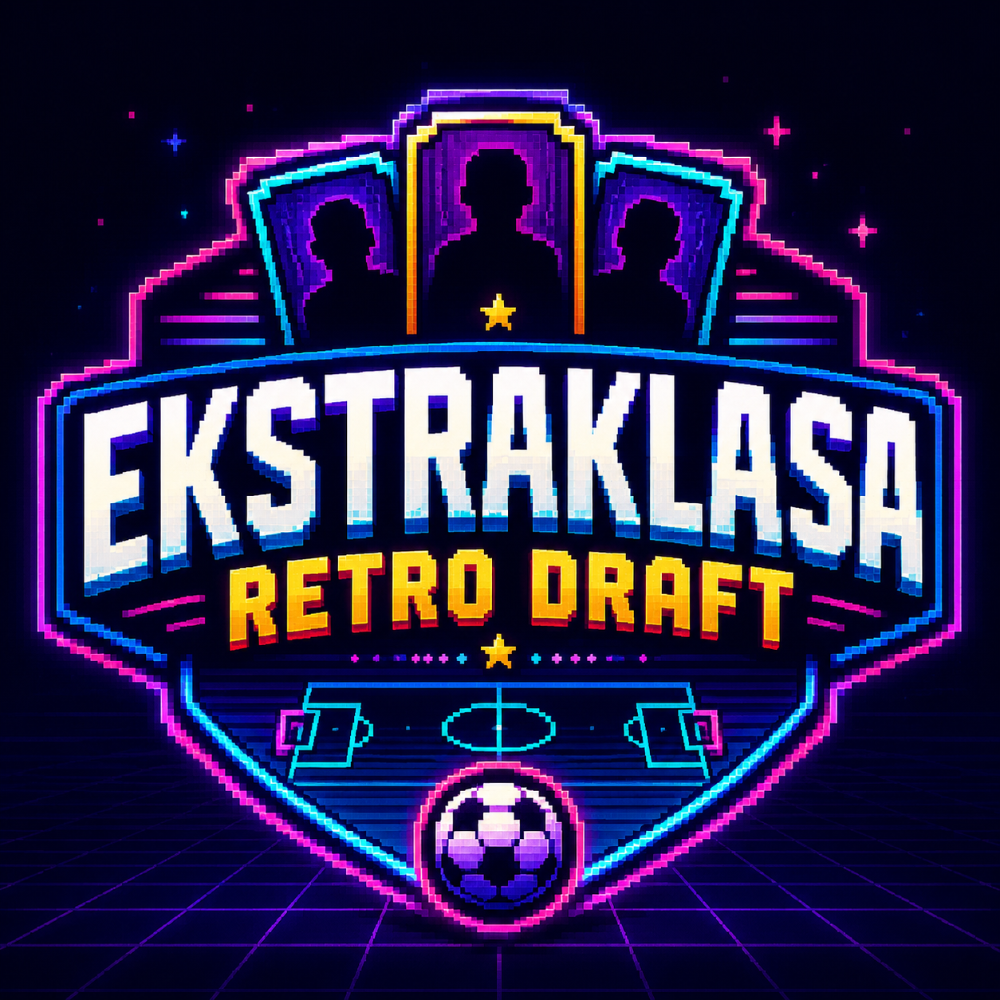

WERSJA 1: TRYB TURNIEJOWY
Ekstraklasa Retro Draft
Zbuduj jedenastkę z historycznych ekip i podejdź do turnieju. Liga, akademia i album są szykowane na kolejne wersje.
Standard
Swobodny draft bez limitu budżetu. Skup się na składzie, zgraniu i klimacie.
Normal
Budżet: 200 mln. Buduj mocny skład, ale musisz podejmować kompromisy.
Hardcore
Budżet: 180 mln. Mniej pieniędzy, trudniejsze decyzje i większa rola średniaków.
Ekstraklasa Retro Draft
Historyczne ekipy, reprezentacje, średni ligowcy, losowe wyzwania i turniej od fazy grupowej.
Tryb standardowy
Tryb normal 200M
Tryb hardcore 180M
4-3-3
4-4-2
3-5-2
4-2-3-1
5-3-2
WYBIERZ TRENERA - OBOWIĄZKOWE
Kazimierz Górski
Franciszek Smuda
Henryk Kasperczak
Adam Nawałka
Michał Probierz
Nowa gra
Draft
Turniej
Album - wkrótce
Menu
Wybierz zawodnika
Wymień pulę
Zamknij
Album kolekcjonera
Zamknij
ZDARZENIE
Zdarzenie losowe
OK
Faza grupowa
Przeciwnik
0 : 0
Następny mecz
Zamknij